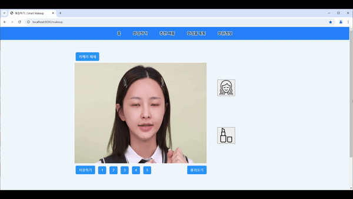
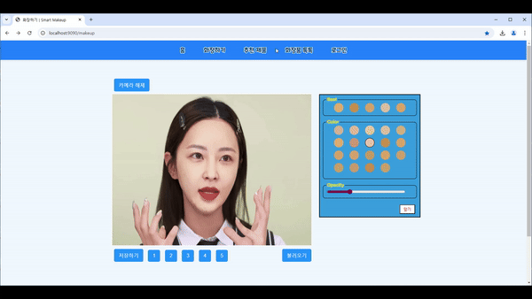

최근 화장품 산업은 온라인 쇼핑몰과 모바일 앱을 중심으로 급성장하고 있습니다. 특히, 코로나19 팬데믹 이후 비대면 쇼핑의 수요가 크게 증가하면서, 소비자들은 제품을 실제로 사용해보기 어려운 상황에서 제품을 구매하게 되었습니다. 이런 상황에서 화장품 구매 전, 실제로 피부에 어떻게 맞을지 확인할 수 있는 방법이 부족하다는 점이 큰 문제로 떠오르고 있습니다.
글로벌 화장품 시장규모 추이 (2015~2021)
이에 따라, Smart Makeup Web은 사용자들이 화장품을 구매하기 전에 자신에게 적합한 색상, 스타일 등을 미리 경험해볼 수 있는 기회를 제공함으로써, 소비자의 불확실성을 줄이고, 만족도를 높여주는 중요한 역할을 할 수 있습니다.
2-2. 시장 환경
현재 화장품 시장은 국내외적으로 활발히 성장하고 있으며, 특히 MZ세대(밀레니얼 + Z세대)를 중심으로 다양한 뷰티 트렌드와 소비 방식이 빠르게 변화하고 있습니다. 이들은 전통적인 매장 방문보다는 온라인 쇼핑, 리뷰, SNS 등을 통해 제품을 구매하는 경향이 강합니다. 특히, 온라인 화장품 구매 시 제품을 직접 체험할 수 없기 때문에, 가상 체험이 중요한 요소로 부각되고 있습니다.
또한, 증강 현실(AR) 기술과 AI를 활용한 맞춤형 뷰티 서비스가 주요 트렌드로 떠오르고 있으며, 이는 소비자에게 더 나은 경험을 제공하고, 제품 구매를 촉진하는 역할을 합니다. 그러나 여전히 많은 사용자들이 화장품 구매 시 자신의 피부와 잘 맞는 제품을 찾는 데 어려움을 겪고 있다는 점에서, 가상 체험 서비스에 대한 수요는 계속해서 증가할 것으로 예상됩니다.
아베다(Aveda)의 가상 헤어 컬러 테스트 [자료: Perfect]
2-3. 서비스 목적
이 서비스의 주요 목적은 소비자에게 실시간으로 가상 화장 체험을 제공함으로써, 제품 구매 결정에 대한 불확실성을 줄이고, 보다 자신감 있는 구매를 돕는 것입니다. 사용자는 자신의 얼굴을 카메라를 통해 직접 화장을 시도해 볼 수 있으며, 다양한 색상과 스타일을 실시간으로 체험해볼 수 있습니다. 이를 통해, 제품을 직접 구매하기 전에 자신의 피부 톤이나 스타일에 맞는 최적의 화장품을 찾을 수 있게 됩니다.
3. Smart Makeup Web 주요 서비스 및 기능
3-1. 화장하기 기능
"화장하기" 기능은 사용자가 실시간으로 카메라를 통해 자신의 모습을 확인하고, 원하는 화장품의 색상과 농도를 선택하여 화장된 모습을 즉시 확인할 수 있는 서비스입니다. 이 기능은 사용자가 다양한 화장 스타일을 빠르고 직관적으로 체험할 수 있도록 돕습니다.
화장 전 이미지: 사용자가 카메라 앞에 서면, 자연스러운 얼굴 상태가 실시간으로 화면에 표시됩니다. 이를 통해 사용자는 화장을 적용하기 전의 본인의 모습을 그대로 확인할 수 있습니다.화장 전 이미지
화장 후 이미지: 원하는 화장품의 색상과 농도를 선택하면, 실시간으로 선택한 화장 효과가 얼굴에 적용되어 화장된 모습을 바로 확인할 수 있습니다. 이를 통해 사용자는 직접 화장을 하지 않고도 자신에게 어울리는 색상과 스타일을 미리 경험할 수 있습니다.Skin, Lip 화장을 적용한 이미지
이 기능은 간편하게 메이크업을 미리 시도할 수 있는 장점을 제공하며, 사용자가 자신의 얼굴에 어떤 화장품이 잘 어울리는지 쉽게 테스트할 수 있도록 돕습니다.
4. 설계 (요구사항 분석 및 설계)
4-1. 유스케이스 다이어그램
주요 기능인 Makeup 기능의 유스케이스 다이어그램
4-2. 데이터베이스 ERD
4-2-1. 전체 ERD
전체 테이블의 ERD
4-2-2. 주요 ERD
주요 ERD인 회원 테이블과 Makeup과 관련된 테이블의 ERD
5. 프로젝트 관리 방식
5-1. 애자일 방법론 적용
본 프로젝트는 애자일 방법론을 기반으로 진행되었다. 애자일은 프로젝트 관리에서 유연성과 빠른 변화 대응을 강조하는 방법론으로, 주기적인 스프린트를 통해 팀원들이 자율적으로 작업을 분담하고, 실시간으로 피드백을 제공받으며 프로젝트를 진행할 수 있도록 했다.
5-1-1. 스프린트(Sprint) 관리
스프린트는 1주 단위로 진행되었다. 각 스프린트 시작 전에 팀원들이 할 일 목록을 정리하고 우선순위를 매겨 작업을 분배했다.
스프린트 종료 후, 각 팀원은 데일리 스크럼을 통해 진행 사항을 공유하고 발생한 문제에 대해 논의했다.
5-1-2. 프로젝트 계획 및 피드백
프로젝트는 초기 계획에 따라 중요한 기능들을 먼저 개발하며 점진적으로 개선해 나갔다. 각 스프린트 후에 진행 상황을 점검하고, 필요한 부분에 대해 수정 및 개선을 통해 목표를 달성했다.
피드백 세션을 통해, 팀원들은 서로의 작업을 검토하고 의견을 교환하며, 기능이 잘 작동하는지 여부를 확인했다.
5-2. 협업(Collaboration)
효율적인 협업을 위해 Git과 Notion을 사용했다.
Git
Git은 프로젝트의 코드와 버전을 관리하기 위해 사용되었다. 팀원들은 Git을 활용하여 코드를 작성하고, GitHub 또는 GitLab와 같은 리모트 저장소에 코드를 푸시(push) 및 풀(pull)하며 실시간으로 작업 내용을 공유했다.
Notion
Notion은 프로젝트 문서를 관리하고 팀원 간의 협업을 촉진하기 위해 사용되었다. 모든 문서와 자료는 Notion에 작성하고, 팀원들과 실시간으로 업데이트를 공유했다.
5-3. 팀워크와 커뮤니케이션(Teamwork and Communication)
데일리 스크럼 : 매일 오전 9시 30분에 팀원들은 간단한 데일리 스크럼을 진행하여 각자의 진행 사항을 공유하고, 발생한 문제를 해결했다.
주간 회고 : 각 스프린트 후, 팀원들은 회고 회의를 통해 스프린트 동안의 성과와 문제점을 돌아보며 개선할 사항을 도출하고, 다음 스프린트에서 적용할 수 있는 방법을 논의했다.
5-4. 회고 (Retrospective)
5-4-1 성과 요약 (Summary Of Achievements)
프로젝트의 주요 목표인 화장하기(실시간 영상처리) 기능을 향상이었으며 목표 성능을 100% 달성했다.
프로젝트 완료 목표일은 2024년 12월 4일이었으며, 2024년 11월 22일에 목표를 12일 앞당겨 완료했다. 계획보다 15.8% 빠른 일정으로 완료되어 프로젝트의 시간 관리가 효율적으로 이루어졌음을 보여 준다.
5-4-2 주요 성과 (Key Achievements)
팀원 최준원이 주요 기능인 서버 통신을 예상보다 한 달 앞당겨 프로젝트를 완료했다.
팀원 한기윤이 주요 기능인 영상 처리를 예상보다 1주 앞당겨 프로젝트를 완료했다.
팀원 현호성이 주요 기능인 스프링부트 사이트 구축을 한 달 앞당겨 프로젝트를 완료했다.
5-4-3 향후 개선 사항 및 제안 (Future Improvements and Recommendations)
기술적 개선 사항
현재 화장하기 기능은 Python/OpenCV로 구현되어 있는데 이를 C++/OpenCV로 구현하여 영상 처리 속도를 개선한다.
서버 동작 시 FastAPI 서버도 함께 동작하는데 서버 사양에 따라 성능이 달라지므로 카메라가 연결될 때만 FastAPI가 동작하도록 개선한다.
비즈니스 개선 사항
화장품 추천 기능만 존재하는데 향후 사이트에서 구매 시 가격 할인을 추가한다.
웹 사이트에 광고를 추가한다.
사용자 개선 사항
영상 처리 외에 튜토리얼 기능을 추가하여 사용자에게 더 나은 사용 경험을 제공할 수 있도록 개선한다.
{kind=link}


{kind=link}
{kind=link}